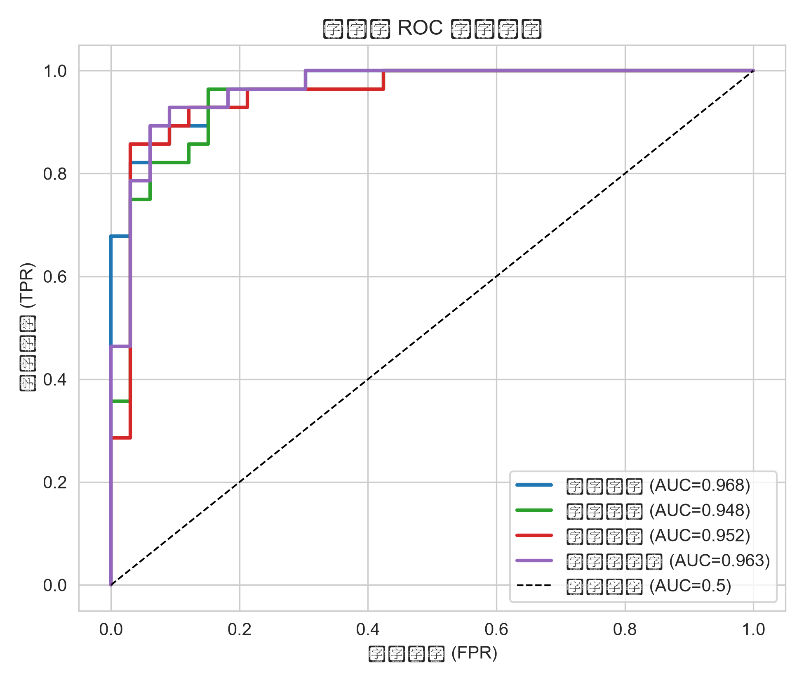
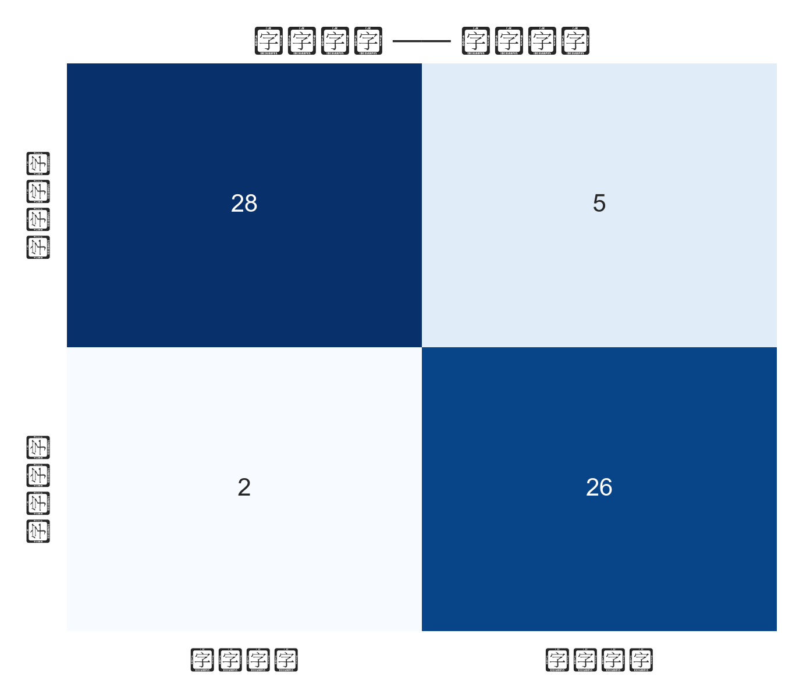
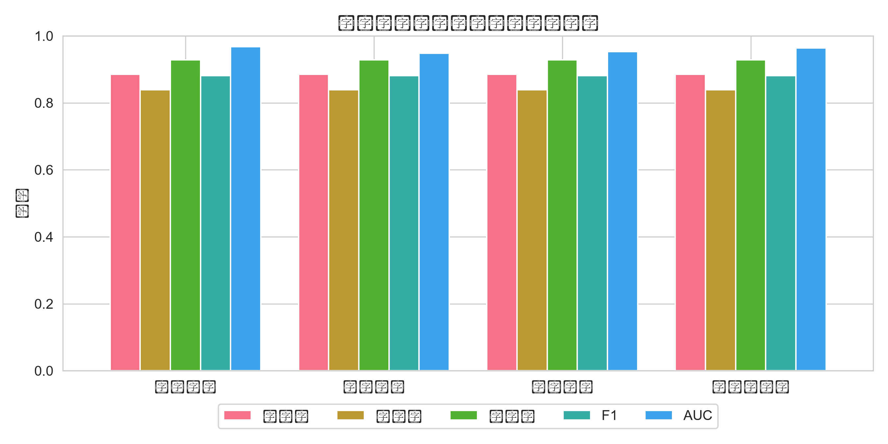
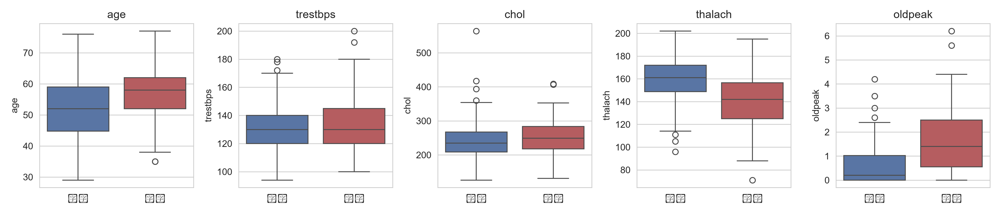
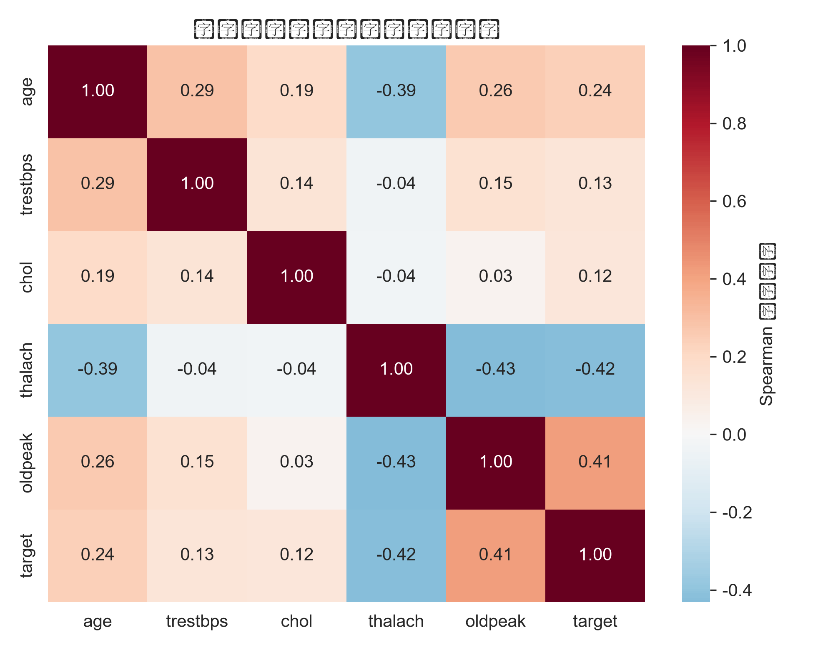
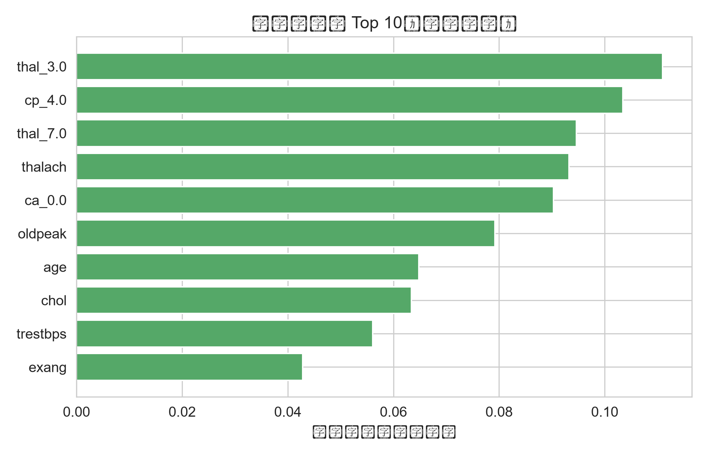
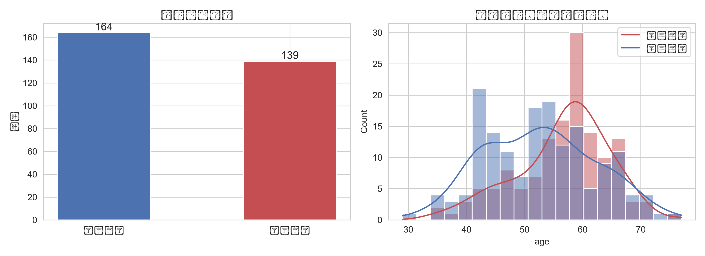
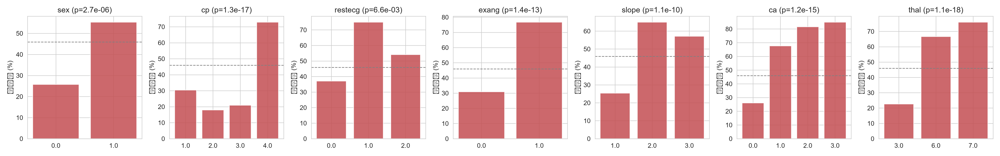
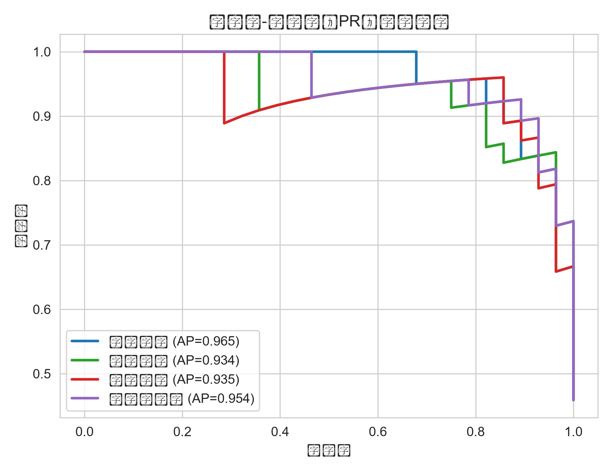

核心结果速览
303
临床样本量
25
编码后特征数
0.968
最佳模型 AUC
88.5%
准确率
92.9%
召回率（筛查漏诊少）
项目流程
📥
数据读取UCI 公开心脏病数据库303×14
🧹
预处理缺失值填补 / 独热编码标准化 / 分层划分
📐
统计分析t 检验 / 卡方检验Spearman 相关
🤖
建模逻辑回归 / 随机森林梯度提升 / SVM
📈
评估可视化ROC / PR / 混淆矩阵特征重要性
🌐
展示网页报告 + LaTeX PDF数据概况与预处理
数据来自 UCI 机器学习数据库 · Heart Disease (Cleveland)，含 303 例临床记录、14 个字段。 目标变量按临床惯例二值化：患病 139 例（45.9%），无病 164 例（54.1%）。
关键预处理步骤：
- 缺失值：ca 缺 4 例、thal 缺 2 例（以 "?" 记录），采用众数填补；
- 异常值：连续变量 |z|>3 共 9 例，均属真实临床范围，予以保留；
- 编码：cp/restecg/slope/ca/thal 独热编码，特征数 13 → 25；
- 标准化：连续变量在训练集上拟合 StandardScaler，防止数据泄漏；
- 划分：分层抽样 80/20（训练 242 / 测试 61），随机种子 42。
统计分析结论
| 变量 | 检验方法 | 统计量 | p 值 | 结论 |
|---|---|---|---|---|
| thalach 最大心率 | t 检验 | t=7.96 | 3.5×10⁻¹⁴ | 极显著↓ |
| oldpeak ST 段压低 | t 检验 | t=−8.13 | 1.1×10⁻¹⁴ | 极显著↑ |
| age 年龄 | t 检验 | t=−3.97 | 9.0×10⁻⁵ | 极显著↑ |
| thal 铊扫描 | 卡方检验 | χ²=82.69 | 1.1×10⁻¹⁸ | 极显著 |
| cp 胸痛类型 | 卡方检验 | χ²=81.82 | 1.3×10⁻¹⁷ | 极显著 |
| ca 血管数 | 卡方检验 | χ²=72.62 | 1.2×10⁻¹⁵ | 极显著 |
| exang 运动心绞痛 | 卡方检验 | χ²=54.69 | 1.4×10⁻¹³ | 极显著 |
| chol 总胆固醇 | t 检验 | t=−1.48 | 0.139 | 不显著 |
| fbs 空腹血糖 | 卡方检验 | χ²=0.08 | 0.781 | 不显著 |
患病组年龄更大、血压更高、最大心率更低、ST 段压更严重；性别、胸痛类型、心电图等 7 个分类变量均显著相关。
模型性能对比（测试集 n=61）
| 模型 | 准确率 | 精确率 | 召回率 | F1 | AUC（测试） | AUC（5折CV） |
|---|---|---|---|---|---|---|
| 🏆 逻辑回归 | 0.885 | 0.839 | 0.929 | 0.881 | 0.968 | 0.904 ± 0.013 |
| 支持向量机 | 0.885 | 0.839 | 0.929 | 0.881 | 0.963 | 0.885 ± 0.021 |
| 梯度提升 | 0.885 | 0.839 | 0.929 | 0.881 | 0.952 | 0.860 ± 0.017 |
| 随机森林 | 0.885 | 0.839 | 0.929 | 0.881 | 0.948 | 0.893 ± 0.028 |
随机森林特征重要性 Top 6
可视化图集









讨论与结论
- 在中小样本临床表格数据上，可解释的逻辑回归不逊于复杂集成模型（AUC 0.968，CV 最稳），利于临床落地与沟通；
- 最大心率（负向）、ST 段压低（正向）、胸痛类型、铊扫描与血管数是最强预测因子，与心血管临床知识吻合；
- 高召回率（92.9%）意味着低漏诊率，适合作为辅助筛查工具；
- 局限：单中心数据、测试集较小、未做外部验证；后续可引入 Hungarian/VA 队列做外部验证，并补充校准曲线与决策曲线分析（DCA）。